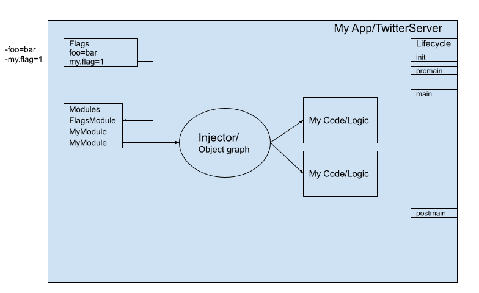

Finatra Basics¶
At a high level, you can think of your Finatra app or server as a container. This container has a lifecycle and some “state”. This state includes Flags and Modules which help to create an Injector that provides access to an object graph.
The lifecycle defines an order of operations for container startup, running, and shutdown that allows for you to hook into phases as necessary to ensure the proper initialization or teardown of your container.
Flags are constructs that allow your container to accept and parse command-line input in a type-safe manner which can be used to help configure container resources (like database connections, or network clients, etc). Flags are parsed at a specific point in the container lifecycle, so it is important to take care in how/when they are accessed with the recommended way being to always access parsed values via injection.
Modules are used to help the Injector create instances (typically of code that is not your own) to keep in the object graph.
Note
It is not always necessary to create a Module since the Injector will recursively try to satisfy @Inject-annotated constructors for a requested type from the object graph, instantiating each constructor argument, all the way back to something with a no-arg constructor.
Modules are only necessary to help the Injector instantiate types that it cannot otherwise instantiate on its own. With the most common case being needing to instantiate instances of code that require external configuration via Flags.
Your container’s list of modules should be defined statically such that they can be used to create the Injector at the appropriate point in the container lifecycle. Dependency injection provides best-practice mechanisms (like using override modules or the #bind[T] DSL in testing) which can be used to swap out implementations of types in the object graph such that you should not have a situation where you need to define a different list of modules in the production code based on a conditional.
It is an anti-pattern if your are chaging the list of modules based on some conditional – especially, if the conditional is defined by external configuration.
Lastly, your logic can then request instances of types from the Injector or via constructor injection. The goal of using dependency injection is to make it easier to write robust tests for your container.
More information and details are provided in the following sections.